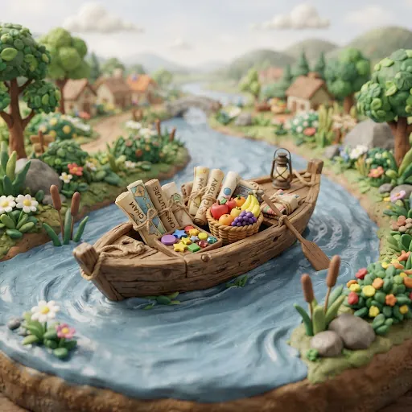

CHAM Homestay: cơ sở lưu trú đầu tiên trên cù lao Tân Lộc
Kế hoạch kinh doanh gốc năm 2017 của Đỗ Thùy Hương (bài học phần Khởi sự doanh nghiệp) cho một homestay sinh thái “hoàn toàn không có bê tông cốt thép”, biểu tượng là hoa cúc la mã. Trang này trình bày kế hoạch như bản gốc; phần Thẩm định kế hoạch soát lại các con số.
Tác giả: Đỗ Thùy Hương

Khoảng trống thị trường
Trong 8 tháng đầu năm 2017, Cần Thơ đón trên 5,2 triệu lượt khách nhưng chỉ khoảng 1,3 triệu lượt lưu trú. Cù lao Tân Lộc có nhiều điểm tham quan nhưng chưa có cơ sở nào cho khách ở lại qua đêm.
Ba nhóm khách mục tiêu
Phân tích SWOT

Điểm mạnh
- Nguồn vốn tự có mạnh
- Vị trí giáp 3 tỉnh
- Dịch vụ đa dạng, thuần nông
- Nguyên liệu tự cung tự cấp
Điểm yếu
- Năng lực quản lý còn non trẻ
- Mô hình chưa nhiều điểm khác biệt
Cơ hội
- Thị hiếu với loại hình này rất lớn
- Đời sống cải thiện, chi nhiều hơn cho du lịch
Thách thức
- Cạnh tranh từ cơ sở lâu năm
- Dễ sao chép, rào cản gia nhập thấp
Kế hoạch tài chính 5 năm
Đơn vị: triệu đồng · Nguồn: số liệu ước tính trong kế hoạchCột: lợi nhuận sau thuế.
| Khoản mục | Năm 1 | Năm 2 | Năm 3 | Năm 4 | Năm 5 |
|---|---|---|---|---|---|
| Doanh thu | 1.761,0 | 2.341,9 | 2.168,0 | 2.320,3 | 2.330,4 |
| Tổng chi phí | 798,3 | 697,0 | 702,7 | 681,2 | 694,0 |
| Thuế | 80,2 | 106,4 | 98,6 | 105,4 | 106,0 |
| Lợi nhuận sau thuế | 882,5 | 1.538,5 | 1.366,8 | 1.533,7 | 1.530,4 |
Marketing hai giai đoạn
Đối thủ cạnh tranh
Rào cản gia nhập ngành thấp; người dân trên cù lao là đối thủ tiềm ẩn. Hiện nay Homestay Cẩm Lụa (Long Châu, Tân Lộc) đã cho thuê phòng 250.000–450.000 đ/đêm, khách sạn ở Thốt Nốt khoảng 300.000–350.000 đ (theo thông tin đăng công khai, cần kiểm chứng).
CHAM™ và nội dung tình huống © 2017–2026 Đỗ Thùy Hương, dùng trên BizOn theo giấy phép không độc quyền. Dự án đang ở giai đoạn kế hoạch; số liệu là giả định, không phải kết quả hoạt động.